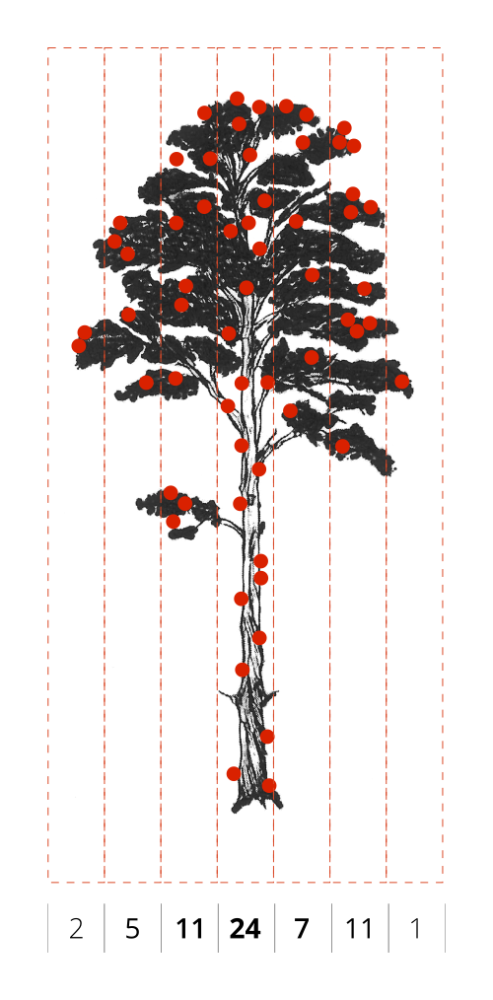
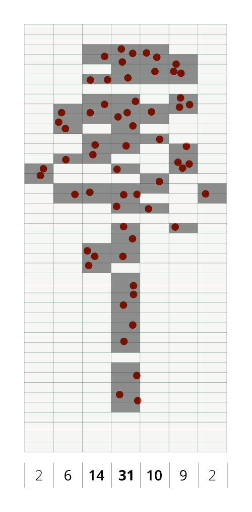

Deciduous/evergreen foliage classification
Published: December 20, 2018 / Last updated: December 20, 2018
Tested on Matlab r2017b, GNU Octave 4.4.1
Introduction
In this tutorial, you will learn how to differentiate deciduous and evergreen foliage using Airborne Laser Scanning (ALS) data. Stem detection is an alternative approach to tree top detection and is likely to perform better on irregularly shaped canopies (in particular, if they were surveyed in leaf-off conditions).
We will use Airborne Laser Scanning (ALS) data acquired over the state of Geneva (Switzerland) in February 2017 (leaf-off conditions) with the Riegl LMS-Q1560 sensor. The data is openly available from Geneva's Official Geodata Portal.
It has been repeatedly demonstrated that the return intensity is a very important feature to differentiate tree species.
This tutorial assumes that:
- The data was acquired in leaf-off conditions
- The return intensity was calibrated and corrected
The interaction of the laser with the atmosphere and surface can be modeled by the RaDAR/LiDAR range equation (Vain and Kaasalainen, 2011; Kashani et al., 2015):
$$P_r = \frac{D_{r}^2 \eta_{atm} \eta_{sys} \sigma P_t}{4 \pi R^4 \beta_{t}^2 }$$where:
- \(P_r\) is the received power [W];
- \(P_t\) is the transmitted power [W];
- \(D_r\) is the aperture diameter [m];
- \(\eta_{atm}\) is the atmospheric transmittance;
- \(\eta_{sys}\) is the system transmittance;
- \(\sigma\) is the effective target cross-section [m2];
- \(R\) is the range from sensor to target [m];
- \(\beta_{t}\) is the width of the laser beam [m];
- \(\Omega\) is the scattering solid angle [sr];
- \(\rho\) is the reflectance of the target;
- \(A_t\) is the area of the target [m2].
Another possible approach to smooth the intensity map is to apply segmentation and average the intensity in each segment. The Simple Linear Iterative Clustering (SLIC) algorithm proposed in Achanta et al. (2012). Other approaches include majority vote or Conditional Random Fields (CRF)
A small forest located about 10 km to the North of Geneva city (see map below) will serve as our study case. Within this area, the main tree species are pedunculate oak (Quercus robur) and Scots pine (Pinus sylvestris).
The stem detection method we will apply is based on a simple observation: the space in a tree gets more cluttered as you approach the stem. Consequently, considering a homogeneous point sampling of the tree geometry, the point density (i.e. the number of points within a vertical column) tends to be higher near the stem (see figure 1 left). To reduce the effect of inhomogenous sampling and to simplify the detection of density peaks, the point cloud can be rasterized (see figure 1 right). The locations of local density peaks may subsequently serve as a basis for tree crown delineation, as proposed in Rahman and Gorte (2008) or more recently in Ayrey et al. (2017).
|  |  |
Setup
- Download and uncompress the Digital Forestry Toolbox (DFT) Zip or Tar archive
- Download the ge_2017_a.laz file from the DFT Zenodo repository and uncompress it with LASzip
- Start Matlab/Octave
- Delete any previous versions of the toolbox
- Add the DFT folders to the Matlab/Octave search path using
addpath(genpath('path to DFT main folder')) - Open
dft_tutorial_3.m(located in the tutorials folder)
Step 1 - Reading the LAS file
We start by reading the LAS file using LASread():
pc = LASread('ge_2017_a.las');Note that you may have to adjust the file path in the code above, depending on where you are storing the LAS file. Also note that the point classification uses the following scheme:
| Class | Description |
|---|---|
| 0 | Created, never lassified |
| 1 | Unclassified |
| 2 | Terrain |
| 3 | Low vegetation (< 50 cm) |
| 5 | High vegetation (≥ 50 cm) |
| 6 | Buildings |
| 7 | Outliers and incorrect measurements (Low noise) |
| 9 | Water |
| 13 | Bridges |
| 15 | Terrain (additional points) |
| 16 | Outliers and incorrect measurements (High noise) |
| 19 | Points measured outside of the area of interest (unclassified) |
Step 2 - Filter the points by classification and return number
When compared to small branches, stems and primary branches are more likely to fully intercept the laser beam and generate a last return (see figure 2). Since we are only interested in detecting stems, we can apply a filter which keeps only last returns (and also removes terrain points or other unwanted classes). To do this, we create a logical (boolean) vector:
idxl_last = pc.record.return_number == pc.record.number_of_returns;
idxl_veg = ismember(pc.record.classification, [4, 5]);
idxl_filter = idxl_veg & idxl_last;Note that while using only the last returns may increase the detection reliability for large stems, it may also reduce the detection rate for smaller stems. You can modify this filtering criteria or add new ones (e.g. acquisition date, intensity, colour) to suit your specific needs.

Step 3 - Compute an intensity map
The stem detection algorithm uses the planimetric coordinates and height of the points above ground as an input. To compute this height, we start by building a 0.5 m resolution raster terrain model from the classified 3D point cloud using elevationModels():
cellSize = 0.5;
[models, refmat] = elevationModels([pc.record.x, pc.record.y, pc.record.z], ...
pc.record.classification, ...
'classTerrain', [2, 15], ...
'classSurface', [4,5], ...
'cellSize', cellSize, ...
'closing', 5, ...
'interpolation', 'idw', ...
'searchRadius', inf, ...
'weightFunction', @(d) d^-3, ...
'smoothingFilter', fspecial('gaussian', [2, 2], 0.8), ...
'outputModels', {'terrain'}, ...
'fig', false, ...
'verbose', true);We then subtract the terrain elevation from the point cloud elevation, to obtain the height of the points above the ground:
P = round([pc.record.x - refmat(3,1), pc.record.y - refmat(3,2)] / refmat(1:2,:));
ind = sub2ind([nrows, ncols], P(:,1), P(:,2));
xyh = [pc.record.x, pc.record.y, pc.record.z - models.terrain.values(ind)];Step 4 - Detect the stems
Using only the filtered points, we can now detect the stems with the treeStems() function:
[label, xyh_stem] = treeStems(xyh, ...
idxl_filter, ...
'cellSize', 0.4, ...
'bandWidth', 1.5, ...
'verticalStep', 0.25, ...
'searchRadius', 2, ...
'minLength', 5, ...
'verbose', true, ...
'fig', true);The parameters have the following meaning:
- cellSize: the size of the raster cells
- bandWidth: the thickness of each horizontal raster layer
- verticalStep: the vertical distance between each horizontal raster layer
- searchRadius: the search radius used to detect local density maxima
- minLength: the minimum count for a local maxima to be considered a stem
By modifing the parameters values, you can adjust the tradeoff between the sensitivity (recall) and the reliability (precision) of the detection. The interactive map below illustrates the detected stem positions.
Step 5 - Superpixel segmentation
You can write the stem attributes to a Comma Separated Values text file (.csv) with:
fid = fopen('ge_2017_a_stems.csv', 'w+'); % open file
fprintf(fid, 'X, Y, H\n'); % write header line
fprintf(fid, '%.2f, %.2f, %.2f\n', xyh_stem'); % write records
fclose(fid); % close fileAfter exporting the CSV file, you can try opening it in any text editor (e.g. Notepad++).
Step 6 - Export the stem attributes to an ESRI shapefile
Octave users, please make sure you are using the latest versions of the 'io' (2.4.12 or above) and 'mapping' (1.4.0 snapshot or above) packages. Previous versions contain critical issues in the shapewrite function.
To export the stem attributes to an ESRI shapefile, you first have to format them into a non-scalar structure and add a "Geometry" field:
S = struct;
for j = 1:size(xyh_stem,1)
S(j,1).Geometry = 'Point';
S(j,1).BoundingBox = [];
S(j,1).ID = j;
S(j,1).X = xyh_stem(j,1);
S(j,1).Y = xyh_stem(j,2);
S(j,1).H = xyh_stem(j,3);
endSpecify the output filepath (by default, the file is created in the current working directory) and use shapewrite() to write the file:
shapewrite(S, 'ge_2017_a_stems.shp');After exporting the shapefile, you can try opening it in any GIS software (e.g. Quantum GIS).
References
- Achanta, R., Shaji, A., Smith, K., Lucchi, A., Fua, P., Süsstrunk, S., 2012. SLIC Superpixels Compared to State-of-the-Art Superpixel Methods. IEEE Transactions on Pattern Analysis and Machine Intelligence 34, 2274–2282. https://doi.org/10.1109/TPAMI.2012.120
- Kashani, A.G., Olsen, M.J., Parrish, C.E., Wilson, N., 2015. A Review of LIDAR Radiometric Processing: From Ad Hoc Intensity Correction to Rigorous Radiometric Calibration. Sensors 15, 28099–28128. https://doi.org/10.3390/s151128099
- Liang, X., Hyyppä, J., Matikainen, L., 2007. Deciduous-coniferous tree classification using difference between first and last pulse laser signatures. International Archives of Photogrammetry, Remote Sensing and Spatial Information Sciences 36, 253–257.
- Luzum, B., Starek, M., Slatton, K.C., 2004. Normalizing ALSM intensities (No. Rep_2004-07-01), Geosensing Engineering and Mapping (GEM) Center. Civil and Coastal Engineering Department, University of Florida, Gainesville, FL, USA.
- Riegl Laser Measurement Systems, 2017. LAS Extrabytes Implementation in RIEGL Software. Riegl Laser Measurement Systems GmbH, Horn, Riedenburgstrasse 48, Austria.
- Vain, A., Kaasalainen, S., 2011. Correcting airborne laser scanning intensity data. INTECH Open Access Publisher.